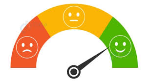

My Work
Selected
Projects
01

Hand Written Digit Recognition
A machine learning model trained on the MNIST dataset to recognize handwritten digits with 95% accuracy.
Python
PyTorch
CUDA
FastAPI
02

SP2YT
A tool to convert Spotify playlists to YouTube playlists using the Spotify and YouTube APIs.
Rust
Systems
Benchmarking
03

A machine learning model trained on the IMDB dataset to classify movie reviews as positive or negative with 85% accuracy.
Python
PyTorch
FastAPI
04
Inventory Management System
This project is Inventory Management System developed using Flask, a Python web framework. The system provides features for managing inventory, filtering and generating reports, and more.
Python
Flask
SQLite
HTML/CSS
JQuery
05

React Portfolio Website
A responsive portfolio website built with React and styled-components. Features smooth animations, a dark/light mode toggle, and a mobile-friendly navigation menu.
React
JavaScript
styled-components
Framer Motion